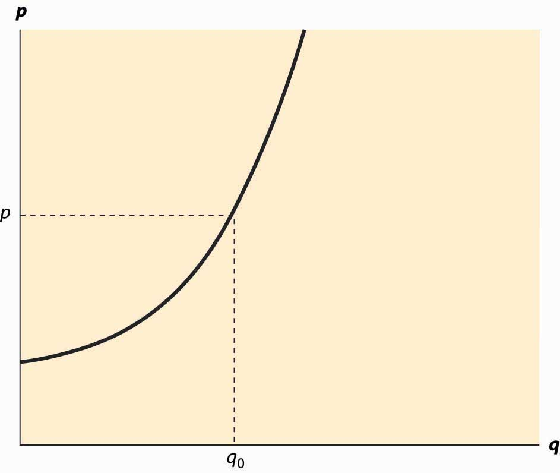
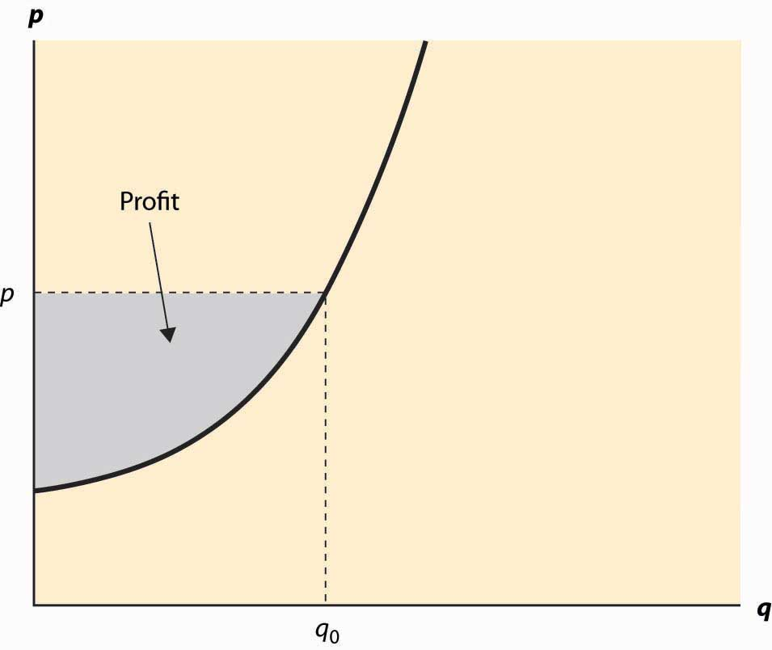
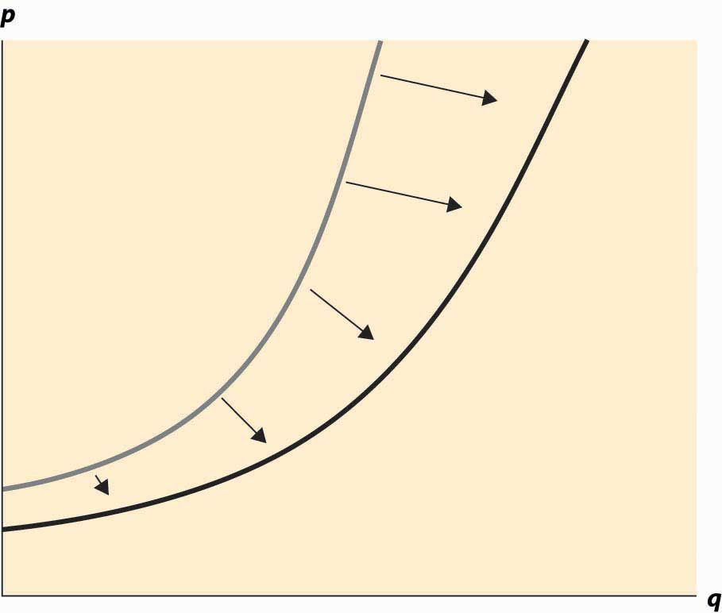

The term supplyThe function that gives the quantity offered for sale as a function of price. refers to the function that gives the quantity offered for sale as a function of price. The supply curve gives the number of units that will be supplied on the horizontal axis, as a function of the price on the vertical axis; Figure 2.4 "The supply curve" illustrates a supply curve. Generally, supply is upward sloping, because if it is a good deal for a supplier to sell 50 units of a product at a price of $10, then it is an even better deal to supply those same 50 at a price of $11. The seller might choose to sell more than 50, but if the first 50 aren’t worth keeping at a price of $10, then it remains true at $11.This is a good point at which to remind the reader that the economists’ familiar assumption of “other things equal” is still in effect. If the increased price is an indication that prices might rise still further, or a consequence of some other change that affects the seller’s value of items, then of course the higher price might not justify sale of the items. We hold other things equal to focus on the effects of price alone, and then will consider other changes separately. The pure effect of an increased price should be to increase the quantity offered, while the effect of increased expectations may be to decrease the quantity offered.
The seller with cost c(q) of selling q units obtains a profit, at price p per unit, of pq – c(q). The quantity that maximizes profit for the seller is the quantity q* satisfying
Thus, “price equals marginal cost” is a characteristic of profit maximization; the supplier sells all the units whose cost is less than price, and doesn’t sell the units whose cost exceeds price. In constructing the demand curve, we saw that it was the inverse of the marginal value. There is an analogous property of supply: The supply curve is the inverse function of marginal cost. Graphed with the quantity supplied on the horizontal axis and price on the vertical axis, the supply curve is the marginal cost curve, with marginal cost on the vertical axis.
Figure 2.4 The supply curve
Analogous to consumer surplus with demand, profit is given by the difference of the price and marginal cost.
This area is shaded in Figure 2.5 "Supplier profits".
The relationship of demand and marginal value exactly parallels the relationship of supply and marginal cost, for a somewhat hidden reason. Supply is just negative demand; that is, a supplier is just the possessor of a good who doesn’t keep it but instead, offers it to the market for sale. For example, when the price of housing goes up, one of the ways people demand less is by offering to rent a room in their house—that is, by supplying some of their housing to the market. Similarly, the marginal cost of supplying a good already produced is the loss of not having the good—that is, the marginal value of the good. Thus, with exchange, it is possible to provide the theory of supply and demand entirely as a theory of net demand, where sellers are negative demanders. There is some mathematical economy in this approach, and it fits certain circumstances better than separating supply and demand. For example, when the price of electricity rose very high in the western United States in 2003, several aluminum smelters resold electricity that they had purchased in long-term contracts; in other words, demanders became suppliers.
Figure 2.5 Supplier profits
However, the “net demand” approach obscures the likely outcomes in instances where the sellers are mostly distinct from the buyers. Moreover, while there is a theory of complements and substitutes for supply that is exactly parallel to the equivalent theory for demand, the nature of these complements and substitutes tends to be different. For these reasons, and also for the purpose of being consistent with common economic usage, we will distinguish supply and demand.
Figure 2.6 An increase in supply
An increase in supply refers to either more units available at a given price or a lower price for the supply of the same number of units. Thus, an increase in supply is graphically represented by a curve that is lower or to the right, or both—that is, to the southeast. This is illustrated in Figure 2.6 "An increase in supply". A decrease in supply is the reverse case, a shift to the northwest.
Anything that increases costs of production will tend to increase marginal cost and thus reduce the supply. For example, as wages rise, the supply of goods and services is reduced because wages are the input price of labor. Labor accounts for about two thirds of all input costs, and thus wage increases create supply reductions (a higher price is necessary to provide the same quantity) for most goods and services. Costs of materials, of course, increase the price of goods using those materials. For example, the most important input into the manufacture of gasoline is crude oil, and an increase of $1 in the price of a 42-gallon barrel of oil increases the price of gasoline about 2 cents—almost one-for-one by volume. Another significant input in many industries is capital and, as we will see, interest is the cost of capital. Thus, increases in interest rates increase the cost of production, and thus tend to decrease the supply of goods.
Analogous to complements in demand, a complement in supply to a good x is a good y such that an increase in the production of y increases the supply of x. In demand, a complement in supplyA good whose cost falls as the amount produced of another good rises. is a good whose cost falls as the amount produced of another good rises. Complements in supply are usually goods that are jointly produced. In producing lumber (sawn boards), a large quantity of wood chips and sawdust are also produced as a by-product. These wood chips and sawdust are useful in the manufacture of paper. An increase in the price of lumber tends to increase the quantity of trees sawn into boards, thereby increasing the supply of wood chips. Thus, lumber and wood chips are complements in supply.
It turns out that copper and gold are often found in the same kinds of rock—the conditions that give rise to gold compounds also give rise to copper compounds. Thus, an increase in the price of gold tends to increase the number of people prospecting for gold and, in the process, increases not just the quantity of gold supplied to the market but also the quantity of copper. Thus, copper and gold are complements in supply.
The classic supply–complement is beef and leather—an increase in the price of beef increases the slaughter of cows, thereby increasing the supply of leather.
The opposite of a complement in supply is a substitute in supplyA good whose cost rises as the amount produced of another good rises.. This is a good whose cost rises as the amount produced of another good rises. Military and civilian aircraft are substitutes in supply—an increase in the price of military aircraft will tend to divert resources used in the manufacture of aircraft toward military aircraft and away from civilian aircraft, thus reducing the supply of civilian aircraft. Wheat and corn are also substitutes in supply. An increase in the price of wheat will lead farmers whose land is well suited to producing either wheat or corn to substitute wheat for corn, thus increasing the quantity of wheat and decreasing the quantity of corn. Agricultural goods grown on the same type of land are usually substitutes. Similarly, cars and trucks, tables and desks, sweaters and sweatshirts, horror movies and romantic comedies are all examples of substitutes in supply.
Complements and substitutes are important because they are common and have predictable effects on demand and supply. Changes in one market spill over to the other market through the mechanism of complements or substitutes.
An owner of an oil well has two technologies for extracting oil. With one technology, the oil can be pumped out and transported for $5,000 per day, and 1,000 barrels per day are produced. With the other technology, which involves injecting natural gas into the well, the owner spends $10,000 per day and $5 per barrel produced, but 2,000 barrels per day are produced. What is the supply? Graph it.
(Hint: Compute the profits, as a function of the price, for each of the technologies. At what price would the producer switch from one technology to the other? At what price would the producer shut down and spend nothing?)
An entrepreneur has a factory that produces Lα widgets, where α < 1, when L hours of labor are used. The cost of labor (wage and benefits) is w per hour. If the entrepreneur maximizes profit, what is the supply curve for widgets?
(Hint: The entrepreneur’s profit, as a function of the price, is pLα—wL. The entrepreneur chooses the amount of labor to maximize profit. Find the amount of labor that maximizes profit, which is a function of p, w, and α. The supply is the amount of output produced, which is Lα.)
In the above exercise, suppose now that more than 40 hours entails a higher cost of labor (overtime pay). Let w be $20/hr for under 40 hours, and $30/hr for each hour over 40 hours, and α = ½. Find the supply curve.
(Hint: Let L(w, p) be the labor demand when the wage is w (no overtime pay) and the price is p. Now show that, if L(20, p) < 40, the entrepreneur uses L(20, p) hours. This is shown by verifying that profits are higher at L(20, p) than at L(30, p). If L(30, p) > 40, the entrepreneur uses L(30, p) hours. Finally, if L(20, p) > 40 > L(30, p), the entrepreneur uses 40 hours. Labor translates into supply via Lα.)
In the previous exercise, for what range of prices does employment equal 40 hours? Graph the labor demanded by the entrepreneur.
(Hint: The answer involves )